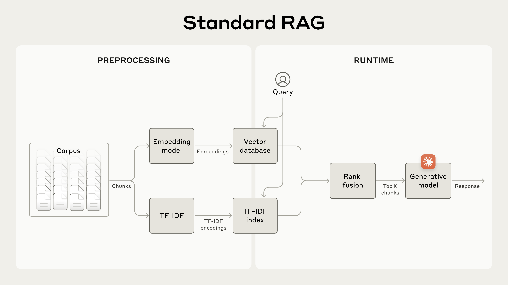
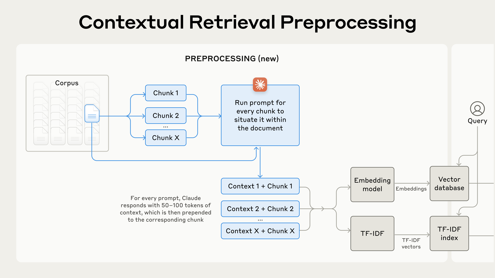

Retrieval-Augmented Generation (RAG)#
How LLMs access external knowledge – from the 2020 paper that coined the term to the retrieve-augment-generate pipeline behind every modern knowledge system.
What Is RAG?#
Large language models have a fundamental limitation: everything they “know” was baked into their weights during training. Once training ends, the model’s knowledge is frozen. It cannot access new information, consult a specific document, or verify a claim against a source. Ask GPT-4 about a company’s latest 10-K and it will either hallucinate an answer or tell you its knowledge has a cutoff date.
Retrieval-Augmented Generation (RAG) solves this by giving the model an open book. Instead of relying solely on what the model memorized during training (its parametric memory), RAG retrieves relevant documents from an external knowledge base at query time and injects them into the prompt. The model then generates its answer grounded in the retrieved context.
The analogy is straightforward: a closed-book exam tests what you memorized; an open-book exam lets you look things up. RAG converts LLMs from closed-book to open-book.

Modern LLM systems augment the base model with retrieval, tools, and memory. RAG is the retrieval component of this architecture. Source: Anthropic, “Building Effective Agents”
RAG is also a specific form of tool use. The retriever is a tool that the LLM calls to access external knowledge, exactly as ReAct agents use a search API. If you have read the ReAct and Toolformer discussion, RAG is the practical realization of that principle for production knowledge systems.
The Origin: Lewis et al. (2020)#
Lewis, P., Perez, E., Piktus, A., Petroni, F., Karpukhin, V., Goyal, N., Kuttler, H., Lewis, M., Yih, W., Rocktaschel, T., Riedel, S., & Kiela, D. (2020). “Retrieval-Augmented Generation for Knowledge-Intensive NLP Tasks.” NeurIPS 2020.
The term “Retrieval-Augmented Generation” was introduced by a team at Facebook AI Research (FAIR) in 2020. The paper addressed a specific problem: language models are good at generating fluent text, but they struggle with knowledge-intensive tasks – questions that require specific factual knowledge rather than general language ability. Open-domain question answering (“What is the capital of Burkina Faso?”), fact verification, and knowledge-grounded dialogue all fall into this category.
Prior to RAG, there were two camps. Parametric models (like GPT-2 and BART) stored all knowledge implicitly in their weights. They were fluent but factually unreliable, and updating their knowledge meant retraining. Non-parametric models (like traditional information retrieval systems) could look up facts in a corpus but couldn’t generate natural language answers. RAG combined both: a non-parametric retriever feeds documents to a parametric generator.
The architecture#
The original RAG system has two components that work together end-to-end:
Retriever: A Dense Passage Retriever (DPR) that encodes both the input query and all documents in a shared vector space. At query time, it performs Maximum Inner Product Search (MIPS) to find the top-k most relevant documents from a pre-built index (the authors used all of Wikipedia).
Generator: A BART sequence-to-sequence model that takes the original query concatenated with each retrieved document and generates the final answer.

Figure 1 from Lewis et al. (2020): The RAG architecture. The query encoder and document encoder map questions and passages into a shared dense vector space. At inference, the query embedding retrieves the top-k documents via Maximum Inner Product Search (MIPS) over a pre-computed document index. The retrieved documents are then passed alongside the query to a seq2seq generator that produces the final output. Source: Lewis et al., “Retrieval-Augmented Generation for Knowledge-Intensive NLP Tasks,” NeurIPS 2020.
The paper proposed two variants:
RAG-Sequence: retrieves a set of documents once and uses the same set to generate the entire output sequence. Suitable when a single coherent answer comes from one source.
RAG-Token: can retrieve different documents for each output token. More flexible, useful when the answer needs to synthesize information from multiple sources.
Results#
RAG set new state-of-the-art results on several open-domain QA benchmarks (Natural Questions, TriviaQA, WebQuestions) and produced answers that human evaluators rated as more factual, specific, and diverse than those from pure parametric models. Critically, updating the knowledge base required only re-indexing the documents – no model retraining.
Why RAG? Three Approaches to Knowledge#
When you need an LLM to work with domain-specific knowledge, there are three main approaches. Each has different tradeoffs:
In-Context Learning |
Fine-Tuning |
RAG |
|
|---|---|---|---|
How it works |
Paste documents directly into the prompt |
Update model weights on domain data |
Retrieve relevant docs at query time and inject into prompt |
Knowledge freshness |
As fresh as whatever you paste in |
Frozen at fine-tuning time |
As fresh as the index (update anytime) |
Scalability |
Limited by context window |
Unlimited (absorbed into weights) |
Scales to millions of documents |
Cost |
High per-call (long prompts) |
High upfront (training), low per-call |
Moderate (embedding + retrieval + generation) |
Auditability |
Full (you see the source text) |
None (knowledge is implicit) |
High (retrieved sources are traceable) |
Setup effort |
None |
Significant (data curation, training) |
Moderate (chunking, embedding, vector DB) |
Finance example |
Paste an earnings transcript and ask questions |
Train on SEC filings for XBRL extraction |
Query a vector DB of 10 years of analyst reports |
RAG occupies a practical middle ground. It is cheaper than fine-tuning, more scalable than in-context learning, and – critically for finance – keeps knowledge updatable without retraining and traceable to sources.
For financial applications specifically, this last point matters. Regulations change. Markets move daily. New filings arrive constantly. A fine-tuned model’s knowledge is stale the moment training ends. A RAG system’s knowledge is as current as its last index update.
How RAG Works: The Pipeline#
The modern RAG pipeline has two phases: preprocessing (done once or periodically) and runtime (done per query).

The standard RAG pipeline. During preprocessing, a corpus is split into chunks, embedded via an embedding model, and stored in a vector database. At runtime, the user’s query is embedded and used to retrieve the top-k most relevant chunks, which are passed to the generative model alongside the query. Source: Anthropic, “Introducing Contextual Retrieval”
Preprocessing: building the index#
Chunk: Split source documents into smaller passages. This is necessary because embedding models and LLM context windows work best with focused, manageable pieces of text rather than entire documents. Chunking strategy matters enormously – splitting a 10-K in the wrong place can separate a number from its label, making the chunk useless.
Embed: Pass each chunk through an embedding model to produce a dense vector representation. These vectors capture the semantic meaning of each chunk in a high-dimensional space.
Store: Insert the vectors into a vector database (Pinecone, Weaviate, Chroma, FAISS, etc.) that supports fast similarity search.
Runtime: answering a query#
Embed the query: The user’s question is passed through the same embedding model to produce a query vector.
Retrieve: The vector database performs similarity search (typically cosine similarity or dot product) to find the top-k chunks most similar to the query.
Augment: The retrieved chunks are inserted into the LLM’s prompt as context, alongside the original question.
Generate: The LLM produces an answer grounded in the retrieved context.
Connection to Course Content
If you worked through the vector embeddings material, you already built the first three stages of this pipeline. RAG adds the augmentation and generation stages on top. The quality of your retrieval – your embedding model, chunking strategy, and similarity search – directly determines the quality of the generated answers.
Beyond Basic RAG: Contextual Retrieval#
A key challenge with standard RAG is that individual chunks often lose meaning when separated from their surrounding document. A chunk that says “the company’s revenue increased 15%” is useless if the retriever doesn’t know which company or which quarter.
Anthropic’s Contextual Retrieval (2024) addresses this by prepending a short, LLM-generated context to each chunk before embedding. For every chunk, a prompt asks the model: “Given this document, situate this chunk within the overall context.” The result is a few sentences of context (50-100 tokens) prepended to the chunk, making it self-contained and much easier to retrieve accurately.

Contextual Retrieval preprocessing. Before embedding, each chunk is sent through an LLM that generates a short context summary situating the chunk within its parent document. The contextualized chunks are then embedded and indexed. Source: Anthropic, “Introducing Contextual Retrieval”
This is a good example of how the basic RAG pipeline has evolved since 2020. The core retrieve-augment-generate pattern remains the same, but each stage has been refined. Better chunking, better embeddings, reranking, contextual enrichment – these improvements compound.
RAG in Finance#
Financial services is one of the highest-value domains for RAG because financial knowledge is voluminous, changes rapidly, and must be traceable to authoritative sources. Several use cases stand out:
Regulatory compliance Q&A. Build a RAG system over SEC filings, Basel III documentation, or internal compliance manuals. Compliance officers ask natural language questions (“What are our reporting obligations under Rule 15c3-1?”) and get answers grounded in the actual regulatory text, with citations.
Equity research assistant. Index a firm’s library of analyst reports, earnings transcripts, and annual filings. Portfolio managers query the system for specific claims (“What did management say about margin guidance in Q3?”) rather than reading hundreds of pages manually.
Real-time market intelligence. Continuously index news feeds, broker research, and social media. When analyzing a new position or reacting to an event, the RAG system surfaces the most relevant recent context automatically.
Internal knowledge management. Index trading desk memos, risk committee minutes, model documentation, and institutional policies. New hires can query years of institutional knowledge that would otherwise take months to absorb through hallway conversations.
In all of these cases, the ability to trace answers back to specific source documents is not optional – it is a regulatory and fiduciary requirement.
Limitations and Considerations#
RAG is powerful, but it is not a silver bullet.
Retrieval quality is the bottleneck. If the retriever returns irrelevant chunks, the generator will produce a confident answer grounded in the wrong information. This is arguably worse than a model admitting it doesn’t know, because the answer looks well-sourced. Garbage in, garbage out.
Chunking is an art, not a science. How you split documents – by paragraph, by section, by token count, by semantic boundary – dramatically affects retrieval quality. Financial documents are especially challenging: tables, footnotes, cross-references, and nested exhibits all break naive chunking strategies.
Hallucination is reduced, not eliminated. The generator can still fabricate claims not present in the retrieved context, misinterpret numbers, or combine facts from different chunks in misleading ways. RAG lowers the hallucination rate but does not zero it out.
Latency and cost tradeoffs. RAG adds an embedding step, a vector search, and longer prompts (because the retrieved context is injected into every call). For latency-sensitive applications – such as real-time trading systems – this overhead matters and must be budgeted.
The frontier is moving. Basic chunk-and-retrieve RAG is already being superseded by more sophisticated approaches: contextual retrieval, agentic retrieval (where the LLM decides what to search for and when), graph-based retrieval over structured knowledge, and hybrid systems that combine dense retrieval with traditional keyword search.
Key Takeaways#
RAG combines a retriever (non-parametric, updatable) with a generator (parametric, fluent) to produce knowledge-grounded answers.
The term and technique originated with Lewis et al. (2020) at Facebook AI Research, combining Dense Passage Retrieval with a BART generator.
RAG is one of three approaches to injecting knowledge into LLMs, alongside in-context learning and fine-tuning. It occupies a practical middle ground for most production applications.
The pipeline has two phases: preprocessing (chunk, embed, store) and runtime (embed query, retrieve, augment, generate).
Financial applications benefit especially from RAG because financial knowledge changes rapidly, spans enormous document volumes, and must be traceable to sources.
RAG reduces hallucination but does not eliminate it. Retrieval quality – your embedding model, chunking strategy, and search infrastructure – is the single most important factor in system quality.